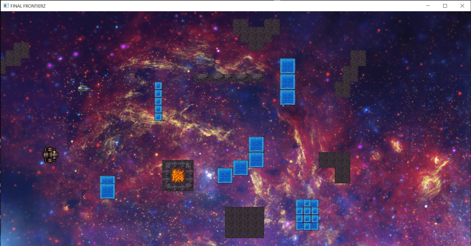

Hi! I'm a Programmer and Game Developer with a focus on graphics and engine development.
I graduated with honors from FH Salzburg in 2017 and am now looking for internships in engine or tools development until I start my masters.
Quick facts:
Favourite language: C++
Fluent in: English, German, C++, C, C#, JavaScript
Focuses on: Engine Programming, Software Architecture, 3D Rendering and Shading
I also adore video games and love thinking about how to make them even greater.
Visit me on:
Right now, I'm building a custom 3D engine in my free time. You can find the full source here.
After finishing the project as part of our degree, we are now working on new features, bug fixes and a Steam release. Find out more here.
Major League Gladiators is a 2-player co-op shooter in VR. The players take control of two classes, the Tank and the DPS, facing off against waves of enemies in an arena. Major League Gladiators attempts to use the immersive capabilities of Roomscale VR to create action packed combat as well as true cooperation between players. Players will have to attempt to survive as many waves of enemies as possible by synergistically using their abilities as well as keeping each other’s health and ammunition up. In Major League Gladiators we concentrate on the coop experience. We want the players to really play together. They attack together and they support each other. Lone wolves won’t survive!
This is the final project of my team of five bachelor degree students of MultiMediaTechnology (MMT) at University of Applied Sciences Salzburg (FHS). We also cooperated with students from MultiMediaArt (MMA) for our asset creation. The project started in January 2017 and was completed in June 2017.
I took the role of lead developer on the project. My responsiblities include:
Designing and implementing systems for other programmers to build upon
Consulting other developers on their designs
Extending and maintining our custom build of Unreal Engine 4
Creating and evolving the game design
Regularly presenting our progress to stakeholders
Major League Gladiators was built using Unreal Engine 4 (UE4) and currently supports the HTC Vive. A release on Steam is currently in the works. We also hope to open source the project in the near future.
A four player, local multiplayer FPS built where players can flip their gravity by 90° in any direction at any time. The game was built by two of my colleagues and me during our 4. bachelor semester. Built in Unity. Sadly due to time constraints and the difficulties that the gravity system added to the game design, it wasn't fully realized. The full source can be found here.
FinalFrontier 2.0 was my GameDevelopment 2 project throughout my 4. bachelor semester. It features full serialiation of the game state to an xml-based text format, loading from file, full graphical editing of the game using an Editor written with QT 5.0 as well as new AI and Multiplayer features.
Helmet Squisher is a 2D platform fighter for 2 players developed in 2 days for a Game Jam at the UAS Salzburg under the motto 'It's not a bug, it's a feature'. The goal of the game is to squish your enemy three times by jumping on their head.
However, you can make your life easier or harder through activating one of the games modifiers:
Everytime you jump there is also a chance of teleporting to a random position, which could work for (porting you away just before getting hit) or against (ruining your perfectly set up squish) you.
My current project is a 2D semi turn-based Roguelike called Realtity Ruckus. It is being developed in cooperation with 2 of my fellow students as part of our MMP2a (MultiMediaProject).
In Reality Ruckus, you are a hero who has been chosen to restore order to time and space following a catastrophic event which collapsed multiple realites into each other. Along the way you will meet fellow heroes who have been forced to leave their dimension.
You will have to explore randomly generated areas and face a multitude of foes in order to collect fragments of an artifact, which is the only hope to restore order back to space and time.
Upon finding all artifact fragments in an area, your hero will have to travel to the next dimension, where he will have to face new challenges.
Flight was the first full game I made I felt was worthy of putting it out. It was created for my second semester MMP. You race through a foggy forest, continously getting faster while dodging trees in your path and collecting pick-ups that double your score multiplier and slow or speed you up.
Play it here (Note: this build might have been messed up by server migration over the summer)
This slideshow (german) provides a more in-depth explanation of the game.
This game is being developed as part of my game development 1 course, featuring an AI controlled second player and a light physics simulation.
One or two players take control of the ships, evading obstacles while also trying to find pickups to gain points.
 A development screenshot of Final FrontierA python program that downloads the beautiful daily bing.com backgrounds and stores them for you, then sets it as your Desktop background.
A node.js script that polls your current location from an Arduino GPS Shield, then shows where you are via Google StreetView.
Never miss a Dota 2 match again! Using an Arduino + a BLE Shield, this application sends a notification to your iOS device as soon as a match is found. You can then accept or decline or remotely, without even being at your keyboard.